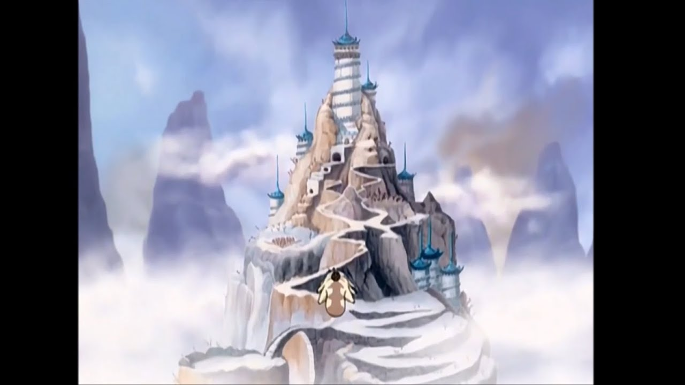

El Templo Aire del Sur fue la casa de la infancia del Avatar Aang y la de su principal mentor, el Monje Gyatso, fue también el hogar del Avatar Roku durante el tiempo en el que entrenaba para dominar el arte del Aire Control.
El templo fue asaltado durante el genocidio de los Nómadas del Aire por el Señor del Fuego Sozin, lo que en última instancia, instigó la Guerra de los Cien Años. El único superviviente conocido de la matanza era la misma persona que la Nación del Fuego intentó matar en su búsqueda por la supremacía: a los doce años de edad, Maestro Aire y Avatar, Aang, que se escapó del Templo Aire del Sur, poco antes de que comenzara la guerra, y quedó atrapado en un iceberg en animación suspendida, hasta su regreso un siglo más tarde.
Antes de la Guerra de los Cien Años, el templo era grande y tranquilo, tenía una arena para el balón aire, y fue el lugar donde Aang inventó la "Patineta de Aire". La instalación cuenta con un masivo santuario en el que las estatuas de los Avatares están dispuestas a la observancia. El templo en sí sirvió principalmente como un campo de entrenamiento para los estudiantes de Aire Control y una vez fue habitado por bisontes voladores y lémures voladores en los días de los Nómadas Aire originales. Como resultado de haber sido construida por y para monjes, varias puertas y mecanismos son operables sólo a través de medios del Aire Control. Una estatua del Monje Gyatso se sitúa en la entrada del templo. A diferencia de los otros tres templos originales, el Templo Aire del Sur presume una decoración con azules agujas elaboradas en lugar de las agujas verdes que adornan los demás.
Los pasillos se decoran con un rombo que tiene un cuadrado adentro que a la vez contiene detalles en un símbolo en espiral que representa el Aire Control, a los lados de las paredes se encuentran unas pequeñas ventanas circulares que expulsan la luz de los rayos solares. A un lado de la puerta al santuario, se encuentra un gran árbol que riega sus raíces hacía el otro extremo de la puerta.
Alrededor del 171 DG, el templo había sido restaurado a su antigua gloria por los Acólitos del Aire dirigidos por el Superior Shung, que hizo su residencia en los terrenos del templo. Se contaba con una próspera población de lémures voladores de cola anillada, similares a los que habían habitado el templo antes del Genocidio de Nómadas Aire. La sala de las estatuas también había sido restaurada y actualizada, e incluye una estatua del Avatar Aang.